はじめに
リファレンス
- https://kubernetes.io/docs/reference/generated/kubectl/kubectl-commands
環境構築
次を参考に環境を構築する。
- https://github.com/sasano8/zenn/blob/main/articles/infra-001-wsl.md
アーキテクチャ

各コンポーネントの概要
Pod
一つあるいは複数のコンテナを内包する、kubernetesにおけるコンテナの最小実行単位となるグループ。 このグループは、kubernetes上で論理的なホストとして振る舞う。
Deployment
対等な関係がある複数のポッド。 サービスを停止せずに、稼働中のポッド置き換えなどで活用される。
NAME READY STATUS RESTARTS AGE pod/hello-world-649b9bfb9c-4mhhl 0/1 CrashLoopBackOff 5 (71s ago) 4m34s
NAME TYPE CLUSTER-IP EXTERNAL-IP PORT(S) AGE
service/kubernetes ClusterIP 10.96.0.1
NAME READY UP-TO-DATE AVAILABLE AGE deployment.apps/hello-world 0/1 1 0 36h
NAME DESIRED CURRENT READY AGE replicaset.apps/hello-world-649b9bfb9c 1 1 0 36h
基本操作
k8sを起動する（minikubeの例）。
kubernetes-versionは指定しないでよいが、不具合発生時などは安定バージョンを指定してみる。
minikube start --kubernetes-version=v1.23.8
キャッシュなどは次のフォルダで管理される。（TODO: プロジェクトごとにキャッシュフォルダを変えることはできる？）
ll ~/.kube
停止する時は次のコマンドを実行する。
minikube stop
バージョンを表示する。
kubectl version
クラスタ情報を表示する。
kubectl cluster-info
デプロイメントを実行する。
kubectl create deployment --image hello-world hello-world
# 非推奨: kubectl run hello-world --image=hello-world -it --restart=Never
# --restart: デフォルトはAlways
# --rm でcomplted時にpodを自動的に削除することができる
dockerにおける大体のコマンドは次の通り。
docker run hello-world
Podを削除する。
kubectl delete pod hello-world
全てのデプロイメントの実行状態を取得。
kubectl get all -o wide
任意のリソースを取得。
k get pod,deployment -o wide
使用できるリソースと省略形を確認する。
kubectl api-resources
podをスケールする。
kubectl create deployment --image=nginx nginx
kubectl scale --replicas=3 deployment/nginx
replicas=0はpodを再起動する際などに使用できる。
kubectl scale --replicas=0 deployment/nginx
kubectl scale --replicas=1 deployment/nginx
バッチ処理系のコンテナはジョブとして実行する。
kubectl create job hello-world --image=hello-world
対話型ポッドを起動する。
kubectl run busybox --image=busybox --restart=Never --rm -it sh
podにターミナル接続する。
TODO: xxx
マニフェスト
cat nginx-pod.yml
kubectl apply -f nginx-pod.yml